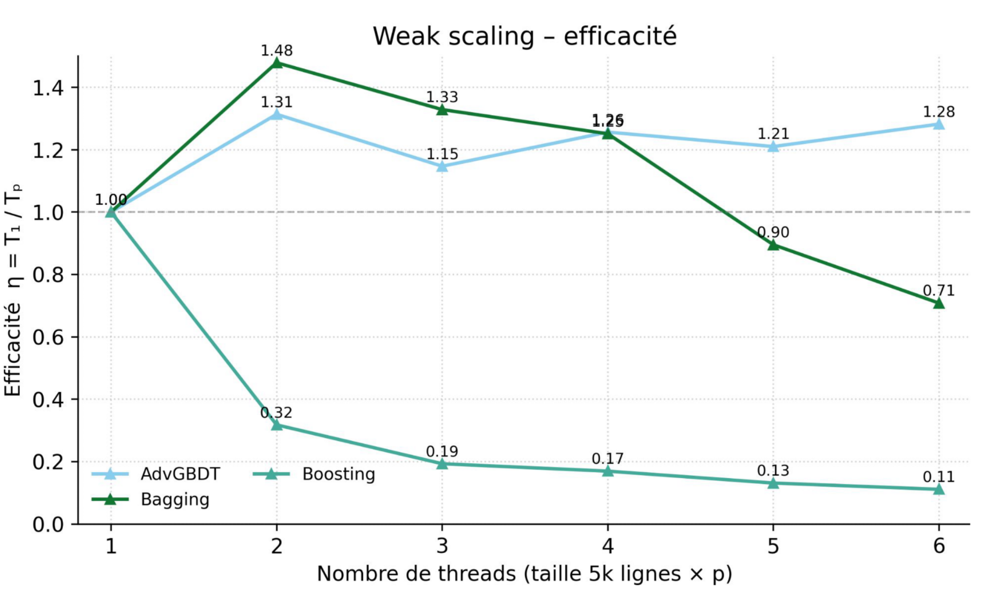

Scientific visualization¶
Plot Example - Intro¶
In the following slides, you will be shown a series of plots; mainly taken from the PPN course reports of previous students.
For each plot:
- Try to understand what is represented
- Explain what you observe
- Give a definitive conclusion from the data shown
Raise your hands when ready to propose an explanation.
Plot Example (1)¶

PPN Example - (No Caption)
Plot Example (2)¶

PPN Example - (No Caption)
Plot Example (3)¶

PPN Example - (No Caption)
Plot Example (4)¶

PPN Example - "Récapitulatif des optimisations faites"
Plot Example (5)¶

PPN Example - "Nouveau tracé de la latence cache"
Plot Example (6)¶

Prof Example - (KNM): (a) Speedup map of GA-Adaptive (7k samples) over the Intel MKL hand-tuning for dgetrf (LU), higher is better. (b) Analysis of the slowdown region (performance regression). (c) Analysis of the high speedup region. \(3,000\) random solutions were evaluated for each distribution.
Plot Example (7)¶

Prof Example - (SPR): Geometric mean Speedup (higher is better) against the MKL reference configuration on dgetrf (LU), depending on the sampling algorithm. 46x46 validation grid. 7k/15k/30k denotes the samples count. GA-Adaptive outperforms all other sampling strategies for auto-tuning. With 30k samples it achieves a mean speedup of \(\times 1.3\) of the MKL dgetrf kernel.
Plot Example - What makes a good plot¶
Ask yourself:
- What do I want to communicate ?
- What data do I need ?
- Is my plot understandable in ~10 seconds ?
- Is my plot self-contained ?
- Is the context, environment, and methodology clear ?
Plot Example - Summary¶
HPC is a scientific endeavour; data analysis and plotting are essential.
- Plots drive decisions
- Plots make results trustworthy
- Plots explain complex behaviors
Datasets are large, multi-disciplinary, and often hard to reproduce.
Experimental Methodology¶
Experimental Methodology - Workflow¶

Statistical significance - Introduction¶
Computers are noisy, complex systems:
- Thread scheduling is non deterministic -> runtime varies between runs.
- Dynamic CPU frequency (Turbo/Boost)
- Systems are heterogeneous (CPU/GPU, dual socket, numa effects, E/P cores)
- Temperature/thermal throttling can alter runtime
How can we make sure our experimental measurements are reliable and conclusive?
Statistical significance - Warm-up effects¶
Systems need time to reach steady-state:

On a laptop: \(\mathrm{Mean} = 0.315\ \mathrm{ms},\ \mathrm{CV} = 13.55\%\)
We need "warm-up" iterations to measure stable performance and skip cold caches, page faults, frequency scaling.
Statistical significance - Noise mitigation¶
Noise can only be mitigated:
- Stop all other background processes (other users)
- Stabilize CPU Frequency (
sudo cpupower -g performance)- Make sure laptops are plugged to avoid powersaving policies
- Pin threads via
taskset,OMP_PLACESandOMP_PROC_BIND - Consider hyperthreading
- Use stable compute nodes
Meta-repetitions are essential to mitigate noisy measurements.
Statistical significance - Example¶
Same experiment on a stabilized benchmarking server:

On a laptop: \(\mathrm{Mean} = 0.315\ \mathrm{ms},\ \mathrm{CV} = 13.55\%\)
Stabilized node: \(\mathrm{Mean} = 0.582\ \mathrm{ms},\ \mathrm{CV} = 1.14\%\)
Note¶
Timing on a laptop is always subpar
Statistical significance - Mean, Median, Variance¶
Single-run measurements are misleading; we need statistics.
- Mean runtime \(\bar{x} = \frac{1}{n}\sum_{i=1}^{n}x_i\)
- Median: less sensitive to outliers than the mean
- Variance/standard deviation: Measure of uncertainty
- Relative metrics are useful: Coefficient of variation (\(CV = \frac{\sigma}{\bar{x}} \times 100 \%\))
We usually give both the mean and standard deviation when giving performance results. Plots usually show \(\bar{x} \pm 1 \sigma\) as a shaded region around the mean to represent uncertainty.
Note¶
Distribution plots can be useful: stable measurements are often close to Gaussian, even if systematic noise may lead to skewed or heavy-tailed distributions.
Statistical significance - Confidence Intervals¶
How to decide how many repetitions we should perform ?
- Usually, the costlier the kernels, the less meta-repetitions are expected
- Short or really short kernels should have more metas to reduce the influence of noise
Remember that:
More repetitions increase confidence, but returns diminish:
CI width \(\propto \tfrac{1}{\sqrt{n}}\)
Note¶
Confidence intervals are a bit less common in plots than \(\pm 1 \sigma\) but can also be used !
Statistical significance - p-score & Hypothesis testing¶
In HPC, mean/median and variance often suffice, but hypothesis testing can become handy in some contexts.
- Null hypothesis (\(H_0\)): GPU and CPU have the same performance for small matrixes
- Differences in measurements are only due to noise
-
Alternative hypothesis: CPU is faster for small matrixes
-
p-value is the probability that \(H_0\) explains a phenomenon.
- If \(p < 0.05\), we can safely reject \(H_0\) (Statistically significant difference)
Example: \(\bar{x}_{GPU} = 5.0 \mathrm{s}\), \(\sigma_{GPU} = 0.20\), \(\bar{x}_{CPU} = 4.8 \mathrm{s}\), \(\sigma_{CPU} = 0.4\), Two-sample t-test with 10 samples \(p = 0.02\).
The measured differences between CPU and GPU execution time are statistically significant.
Experimental Methodology – Reproducibility¶
Reproducibility is a very hot topic (Reproducibility crisis in science):
- Data and protocols are first-class citizens: as important as the plots themselves
- Transparency matters: make data, scripts, and parameters accessible
- Enables others to verify, build on, and trust your results
Note¶
Beware of your mindset: your results should be credible and honest before being "good".
"Our results are unstable, we have yet to understand why, this is what we tried" is a completely valid answer